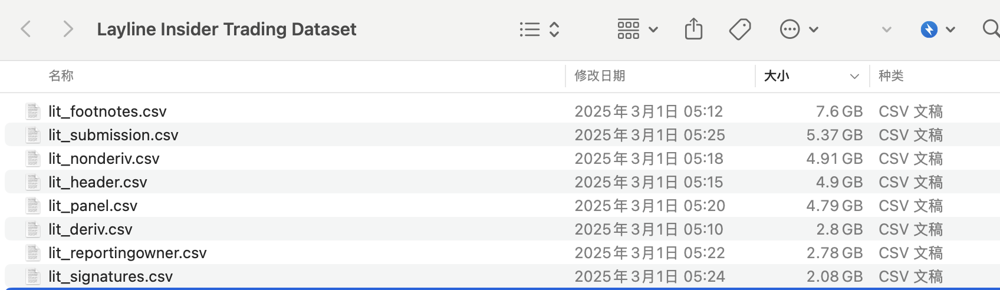

该数据集捕捉了上市公司内幕交易活动。投资者和投资分析师需要这些信息，因为高管、董事和大股东被认为比外界人士更了解其公司的前景。内幕交易中的股票买卖可能揭示了财务报表中未披露的公司业务信息。如果内幕人士能够更好地解读有关公司的公开信息，这些交易还可能传递出预测股价变动的新信息。
自 2003 年中起，证券交易委员会以结构化格式向公众提供了这些内幕交易报告； 然而，大多数学术论文使用的是商业数据库而非直接的监管文件。这使得复制研究变得困难，因为数据处理和聚合过程不透明，历史记录可能会随着时间被数据库提供商修改。为了克服这些限制，本数据集是从原始监管文件创建的；它每天更新，并包括内幕人士报告的所有信息，未经修改。
一、 数据集介绍
数据集名: Layline内幕交易数据集(Layline insider trading dataset)
覆盖日期: 2003-06-30 ~ 2023-02-02
数据体积: 解压后35G(截止2023-02-02)
数据来源: https://www.sec.gov/edgar
下载数据: https://www.kaggle.com/datasets/layline/insidertrading
引用数据: Balogh, Attila, 2023, "Layline insider trading dataset", https://doi.org/10.7910/DVN/VH6GVH, Harvard Dataverse, V419
本文说明: 科研用途; 如有问题，请加微信372335839，备注「姓名-学校-专业」
Layline项目是一个研究倡议，旨在利用高性能和云计算创建金融经济学领域的公开可访问数据集。它通过民主化数据访问来降低进入门槛，同时也通过促进复制研究增加了该领域的透明度。
二、实验代码
一般1G大小的csv，对应着要消耗电脑内 1G ~ 5G 内存 。 该数据集相关文件截图如下， 可以看到文件的体积都比较大。 目前大家使用的电脑，内存参数大多是8G或16G， 少部分同学们使用的32G+。接下来以 lit_footnotes.csv 为例， 简单学下 pd.read_csv 读取技巧。

pd.read_csv(filepath_or_buffer, nrows, usecols, engine=‘pyarrow’, dtype_backend=‘pyarrow’, chunksize)
- filepath_or_buffer csv数据文件路径
- nrows 限定读取行数
- usecols 选取部分字段进行读取(列表)
- engine 设置读取引擎， 可选python、c、pyarrow。
- 其中python为默认方式， 兼容性最佳。
- c和pyarrow读取速度较python更快
- pyarrow可并行读取，速度最快，但兼容性差，容易报错。
- dtype_backend 设置pyarrow后，大大降低python中该数据内存占用量
- chunksize 每批次行数； 如果文件体积远超电脑内存时， 可将一个大文件拆分， 分批次读取。
这里设计一个df内存查看函数，单位GB
def bytes_to_GB(df):
bytes_value = df.memory_usage(deep=True).sum()
return round(bytes_value / (1024 ** 3), 2)
def bytes_to_MB(df):
bytes_value = df.memory_usage(deep=True).sum()
return round(bytes_value / (1024 ** 2), 2)
2.1 nrows
使用 nrows 参数设置只读取前n条记录， 了解csv字段有哪些
import pandas as pd
#只读取csv中前5条记录
df = pd.read_csv('lit_footnotes.csv', nrows=5)
df
%%time
import pandas as pd
#只读取csv中前5条记录
df = pd.read_csv('lit_footnotes.csv')
print(f"内存占用: {bytes_to_GB(df)} GB")
Run
CPU times: user 35.7 s, sys: 4.55 s, total: 40.3 s
Wall time: 37.5 s
内存占用: 10.84 GB
2.2 usecols
指定某几个字段进行读取
%%time
import pandas as pd
#指定某些字段读取
df = pd.read_csv('lit_footnotes.csv', usecols=['filingDate', 'id', 'content'])
print(f"内存占用: {bytes_to_GB(df)} GB")
df
Run
内存占用: 6.95 GB
CPU times: user 32.2 s, sys: 1.55 s, total: 33.8 s
Wall time: 34.1 s
2.3 engine
可指定 engine=‘pyarrow’, 来提高读取速度。
%%time
import pandas as pd
df = pd.read_csv('lit_footnotes.csv', engine='pyarrow')
print(f"内存占用: {bytes_to_GB(df)} GB")
Run
内存占用: 10.84 GB
CPU times: user 23.3 s, sys: 12.6 s, total: 35.9 s
Wall time: 19.7 s
注: 有时候使用engine=‘pyarrow’, 容易代码报错， 这时候就只能放弃这个方法乖乖的默认读取。 经大邓实验，本数据集全部csv文件均可正常使用 engine=‘pyarrow’ 。
2.4 dtype_backend
指定 dtype_backend=‘pyarrow’ 理论上会大大降低内存占用，但读取速度可能不一定提高。
%%time
import pandas as pd
df = pd.read_csv('lit_footnotes.csv', dtype_backend='pyarrow')
print(f"内存占用: {bytes_to_GB(df)} GB")
Run
内存占用: 7.19 GB
CPU times: user 44 s, sys: 8 s, total: 52 s
Wall time: 53.5 s
同时指定 engine 和 dtype_backend 两个参数， 会明显提高读取速度。
%%time
import pandas as pd
df = pd.read_csv('lit_footnotes.csv', engine='pyarrow', dtype_backend='pyarrow')
print(f"内存占用: {bytes_to_GB(df)} GB")
Run
内存占用: 7.19 GB
CPU times: user 9.88 s, sys: 7.55 s, total: 17.4 s
Wall time: 2.12 s
对比
| 参数 | 解析速度 | 内存占用 |
|---|---|---|
| pd.read_csv(csvf) | 最慢 | 最大 |
| pd.read_csv(csvf. engine=‘pyarrow’) | 较快 | 中等 |
| pd.read_csv(csvf, engine=‘pyarrow’, dtype_backend=‘pyarrow’) | 最快 | 最小 |
2.5 chunksize
当探索完前n行，选中某些列，我们已经了解了哪些字段是我们必须要用的， 占用系统内存的大小。
接下来，我们就可以尝试着按照批次读取数据。
为了让实验简单高效，我们假设只读取前50000行， 每批次是10000 行。 对比下占用系统内存的量
import pandas as pd
#一次性读取50000条记录
df = pd.read_csv('lit_footnotes.csv', nrows=50000)
print(f"一次性读取内存占用: {bytes_to_MB(df)} MB")
#分批次读取
#每10000条记录是一个批次，得到chunk_dfs
chunk_dfs = pd.read_csv('lit_footnotes.csv', nrows=50000, chunksize=10000)
#每个chunk_df就是我们熟悉的dataframe类型数据
for chunk_df in chunk_dfs:
print(f"分批次读取内存占用: {bytes_to_MB(chunk_df)} MB")
Run
一次性读取内存占用: 23.04 MB
分批次读取内存占用: 4.71 MB
分批次读取内存占用: 4.73 MB
分批次读取内存占用: 4.43 MB
分批次读取内存占用: 4.68 MB
分批次读取内存占用: 4.5 MB
在实践中，nrows 和 chunksize 不会同时出现， 而且 chunksize 一般都会设置的很大，例如1000000条。
chunk_dfs = pd.read_csv('csv文件', chunksize=1000000)
看到 chunk_dfs 也不要害怕，其实每个 chunk_df 就是我们熟悉的 df ，即dataframe数据类型。
三、总结
记住这行代码
pd.read_csv(csvf, nrows, usecols, engine, dtype_backend, chunksize)
8G内存的电脑， 通过以上技巧，基本可以把我们应对大数据的潜力放大N倍。 N可以是几倍、十几倍、几十倍、上百倍…，放大潜力的过程
- usecols 和 chunksize 起主要作用，百试百爽，稳定不出错。
- engine 和 dtype_backend 提高读取速度并降低内存占用，但代码容易出错。
- chunksize、nrows 参数不能与 engine、dtype_backend同时使用。
相关内容